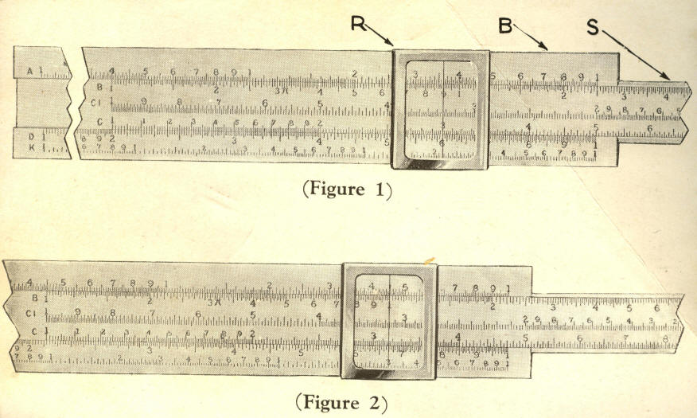

[Transcriber's Notes]
Conventional mathematical notation requires specialized fonts and
typesetting conventions. I have adopted modern computer programming
notation using only ASCII characters. The square root of 9 is thus
rendered as square_root(9) and the square of 9 is square(9).
10 divided by 5 is (10/5) and 10 multiplied by 5 is (10 * 5 ).
The DOC file and TXT files otherwise closely approximate the original
text. There are two versions of the HTML files, one closely
approximating the original, and a second with images of the slide rule
settings for each example.
By the time I finished engineering school in 1963, the slide rule was a
well worn tool of my trade. I did not use an electronic calculator for
another ten years. Consider that my predecessors had little else to
use--think Boulder Dam (with all its electrical, mechanical and
construction calculations).
Rather than dealing with elaborate rules for positioning the decimal
point, I was taught to first "scale" the factors and deal with the
decimal position separately. For example:
1230 * .000093 =
1.23E3 * 9.3E-5
1.23E3 means multiply 1.23 by 10 to the power 3.
9.3E-5 means multiply 9.3 by 0.1 to the power 5 or 10 to the power -5.
The computation is thus
1.23 * 9.3 * 1E3 * 1E-5
The exponents are simply added.
1.23 * 9.3 * 1E-2 =
11.4 * 1E-2 =
.114
When taking roots, divide the exponent by the root.
The square root of 1E6 is 1E3
The cube root of 1E12 is 1E4.
When taking powers, multiply the exponent by the power.
The cube of 1E5 is 1E15.
[End Transcriber's Notes]
INSTRUCTIONS
for using a
SLIDE
RULE
SAVE TIME!
DO THE FOLLOWING INSTANTLY WITHOUT PAPER AND PENCIL
MULTIPLICATION
DIVISION
RECIPROCAL VALUES
SQUARES & CUBES
EXTRACTION OF SQUARE ROOT
EXTRACTION OF CUBE ROOT
DIAMETER OR AREA OF CIRCLE

INSTRUCTIONS FOR USING A SLIDE RULE
The slide rule is a device for easily and quickly multiplying, dividing
and extracting square root and cube root. It will also perform any
combination of these processes. On this account, it is found extremely
useful by students and teachers in schools and colleges, by engineers,
architects, draftsmen, surveyors, chemists, and many others. Accountants
and clerks find it very helpful when approximate calculations must be
made rapidly. The operation of a slide rule is extremely easy, and it is
well worth while for anyone who is called upon to do much numerical
calculation to learn to use one. It is the purpose of this manual to
explain the operation in such a way that a person who has never before
used a slide rule may teach himself to do so.
DESCRIPTION OF SLIDE RULE
The slide rule consists of three parts (see figure 1). B is
the body of
the rule and carries three scales marked A, D and K. S is the slider
which moves relative to the body and also carries three scales marked B,
CI and C. R is the runner or indicator and is marked in the center with
a hair-line. The scales A and B are identical and are used in problems
involving square root. Scales C and D are also identical and are used
for multiplication and division. Scale K is for finding cube root. Scale
CI, or C-inverse, is like scale C except that it is laid off from right
to left instead of from left to right. It is useful in problems
involving reciprocals.
MULTIPLICATION
We will start with a very simple example:
Example 1: 2 * 3 = 6
To prove this on the slide rule, move the slider so that the 1 at the
left-hand end of the C scale is directly over the large 2 on the D scale
(see figure 1). Then move the runner till the hair-line is over 3 on the
C scale. Read the answer, 6, on the D scale under the hair-line. Now,
let us consider a more complicated example:
Example 2: 2.12 * 3.16 = 6.70
As before, set the 1 at the left-hand end of the C scale, which we will
call the left-hand index of the C scale, over 2.12 on the D scale (See
figure 2). The hair-line of the runner is now placed over 3.16 on the C
scale and the answer, 6.70, read on the D scale.
METHOD OF MAKING SETTINGS
In order to understand just why 2.12 is set where it is (figure 2),
notice that the interval from 2 to 3 is divided into 10 large or major
divisions, each of which is, of course, equal to one-tenth (0.1) of the
amount represented by the whole interval. The major divisions are in
turn divided into 5 small or minor divisions, each of which is one-fifth
or two-tenths (0.2) of the major division, that is 0.02 of the
whole interval. Therefore, the index is set above
2 + 1 major division + 1 minor division = 2 + 0.1 + 0.02 = 2.12.
In the same way we find 3.16 on the C scale. While we are on this
subject, notice that in the interval from 1 to 2 the major divisions are
marked with the small figures 1 to 9 and the minor divisions are 0.1 of
the major divisions. In the intervals from 2 to 3 and 3 to 4 the minor
divisions are 0.2 of the major divisions, and for the rest of the D (or
C) scale, the minor divisions are 0.5 of the major divisions.
Reading the setting from a slide rule is very much like reading
measurements from a ruler. Imagine that the divisions between 2 and 3 on
the D scale (figure 2) are those of a ruler divided into tenths of a
foot, and each tenth of a foot divided in 5 parts 0.02 of a foot long.
Then the distance from one on the left-hand end of the D scale (not
shown in figure 2) to one on the left-hand end of the C scale would he
2.12 feet. Of course, a foot rule is divided into parts of uniform
length, while those on a slide rule get smaller toward the right-hand
end, but this example may help to give an idea of the method of making
and reading settings. Now consider another example.
Example 3a: 2.12 * 7.35 = 15.6
If we set the left-hand index of the C scale over 2.12 as in the last
example, we find that 7.35 on the C scale falls out beyond the body of
the rule. In a case like this, simply use the right-hand index of the C
scale. If we set this over 2.12 on the D scale and move the runner to
7.35 on the C scale we read the result 15.6 on the D scale under the
hair-line.
Now, the question immediately arises, why did we call the result 15.6
and not 1.56? The answer is that the slide rule takes no account of
decimal points. Thus, the settings would be identical for all of the
following products:
Example 3:
a-- 2.12 * 7.35 = 15.6
b-- 21.2 * 7.35 = 156.0
c-- 212 * 73.5 = 15600.
d-- 2.12 * .0735 = .156
e-- .00212 * 735 = .0156
The most convenient way to locate the decimal point is to make a mental
multiplication using only the first digits in the given factors. Then
place the decimal point in the slide rule result so that its value is
nearest that of the mental multiplication. Thus, in example 3a above, we
can multiply 2 by 7 in our heads and see immediately that the decimal
point must be placed in the slide rule result 156 so that it becomes
15.6 which is nearest to 14. In example 3b (20 * 7 = 140), so we must
place the decimal point to give 156. The reader can readily verify the
other examples in the same way.
Since the product of a number by a second number is the same as the
product of the second by the first, it makes no difference which of the
two numbers is set first on the slide rule. Thus, an alternative way of
working example 2 would be to set the left-hand index of the C scale
over 3.16 on the D scale and move the runner to 2.12 on the C scale and
read the answer under the hair-line on the D scale.
The A and B scales are made up of two identical halves each of which is
very similar to the C and D scales. Multiplication can also be carried
out on either half of the A and B scales exactly as it is done on the C
and D scales. However, since the A and B scales are only half as long as
the C and D scales, the accuracy is not as good. It is sometimes
convenient to multiply on the A and B scales in more complicated
problems as we shall see later on.
A group of examples follow which cover all the possible combination of
settings which can arise in the multiplication of two numbers.
Example
4: 20 * 3 = 60
5: 85 * 2 = 170
6: 45 * 35 = 1575
7: 151 * 42 = 6342
8: 6.5 * 15 = 97.5
9: .34 * .08 = .0272
10: 75 * 26 = 1950
11: .00054 * 1.4 = .000756
12: 11.1 * 2.7 = 29.97
13: 1.01 * 54 = 54.5
14: 3.14 * 25 = 78.5
DIVISION
Since multiplication and division are inverse processes, division on a
slide rule is done by making the same settings as for multiplication,
but in reverse order. Suppose we have the example:
Example 15: (6.70 / 2.12) = 3.16
Set indicator over the dividend 6.70 on the D scale. Move the slider
until the divisor 2.12 on the C scale is under the hair-line. Then read
the result on the D scale under the left-hand index of the C scale. As
in multiplication, the decimal point must be placed by a separate
process. Make all the digits except the first in both dividend and
divisor equal zero and mentally divide the resulting numbers. Place the
decimal point in the slide rule result so that it is nearest to the
mental result. In example 15, we mentally divide 6 by 2. Then we place
the decimal point in the slide rule result 316 so that it is 3.16 which
is nearest to 3.
A group of examples for practice in division follow:
Example
16: 34 / 2 = 17
17: 49 / 7 = 7
18: 132 / 12 = 11
19: 480 / 16 =30
20: 1.05 / 35 =.03
21: 4.32 / 12 =.36
22: 5.23 / 6.15 =.85
23: 17.1 / 4.5 = 3.8
24: 1895 / 6.06 = 313
25: 45 /.017 = 2647
THE CI SCALE
If we divide one (1) by any number the answer is called the reciprocal
of the number. Thus, one-half is the reciprocal of two, one-quarter is
the reciprocal of four. If we take any number, say 14, and multiply it
by the reciprocal of another number, say 2, we get:
Example 26: 14 * (1/2) = 7
which is the same as 14 divided by two. This process can be carried out
directly on the slide rule by use of the CI scale. Numbers on the CI
scale are reciprocals of those on the C scale. Thus we see that 2 on the
CI scale comes directly over 0.5 or 1/2 on the C scale. Similarly 4 on
the CI scale comes over 0.25 or 1/4 on the C scale, and so on. To do
example 26 by use of the CI scale, proceed exactly as if you were going
to multiply in the usual manner except that you use the CI scale instead
of the C scale. First set the left-hand index of the C scale over 14 on
the D scale. Then move the indicator to 2 on the CI scale. Read the
result, 7, on the D scale under the hair-line. This is really another
way of dividing. THE READER IS ADVISED TO WORK EXAMPLES
16 TO 25 OVER AGAIN BY USE OF THE CI SCALE.
SQUARING AND SQUARE ROOT
If we take a number and multiply it by itself we call the result the
square of the number. The process is called squaring the number. If we
find the number which, when multiplied by itself is equal to a given
number, the former number is called the square root of the given number.
The process is called extracting the square root of the number. Both
these processes may be carried out on the A and D scales of a slide
rule. For example:
Example 27: 4 * 4 = square( 4 ) = 16
Set indicator over 4 on D scale. Read 16 on A scale under hair-line.
Example 28: square( 25.4 ) = 646.0
The decimal point must be placed by mental survey. We know that
square( 25.4 ) must be a little larger than square( 25 ) = 625 so that
it
must be 646.0.
To extract a square root, we set the indicator over the number on the A
scale and read the result under the hair-line on the D scale. When we
examine the A scale we see that there are two places where any given
number may be set, so we must have some way of deciding in a given case
which half of the A scale to use. The rule is as follows:
(a) If the number is greater than one. For an odd number of digits to
the left of the decimal point, use the left-hand half of the A scale.
For an even number of digits to the left of the decimal point, use the
right-hand half of the A scale.
(b) If the number is less than one. For an odd number of zeros to the
right of the decimal point before the first digit not a zero, use the
left-hand half of the A scale. For none or any even number of zeros to
the right of the decimal point before the first digit not a zero, use
the right-hand half of the A scale.
Example 29: square_root( 157 ) = 12.5
Since we have an odd number of digits set indicator over 157 on
left-hand half of A scale. Read 12.5 on the D scale under hair-line. To
check the decimal point think of the perfect square nearest to 157. It
is
12 * 12 = 144, so that square_root(157) must be a little more than 12 or
12.5.
Example 30: square_root( .0037 ) = .0608
In this number we have an even number of zeros to the right of the
decimal point, so we must set the indicator over 37 on the right-hand
half of the A scale. Read 608 under the hair-line on D scale. To place
the decimal point write:
square_root( .0037 ) = square_root( 37/10000 )
= 1/100 square_root( 37 )
The nearest perfect square to 37 is 6 * 6 = 36, so the answer should be
a little more than 0.06 or .0608. All of what has been said about use of
the A and D scales for squaring and extracting square root applies
equally well to the B and C scales since they are identical to the A and
D scales respectively.
A number of examples follow for squaring and the extraction of square
root.
Example
31: square( 2 ) = 4
32: square( 15 ) = 225
33: square( 26 ) = 676
34: square( 19.65 ) = 386
35: square_root( 64 ) = 8
36: square_root( 6.4 ) = 2.53
37: square_root( 498 ) = 22.5
38: square_root( 2500 ) = 50
39: square_root( .16 ) = .04
40: square_root( .03 ) = .173
CUBING AND CUBE ROOT
If we take a number and multiply it by itself, and then multiply the
result by the original number we get what is called the cube of the
original number. This process is called cubing the number. The reverse
process of finding the number which, when multiplied by itself and then
by itself again, is equal to the given number, is called extracting the
cube root of the given number. Thus, since 5 * 5 * 5 = 125, 125 is the
cube of 5 and 5 is the cube root of 125.
To find the cube of any number on the slide rule set the indicator over
the number on the D scale and read the answer on the K scale under the
hair-line. To find the cube root of any number set the indicator over
the number on the K scale and read the answer on the D scale under the
hair-line. Just as on the A scale, where there were two places where you
could set a given number, on the K scale there are three places where a
number may be set. To tell which of the three to use, we must make use
of the following rule.
(a) If the number is greater than one. For 1, 4, 7, 10, etc., digits to
the left of the decimal point, use the left-hand third of the K scale.
For 2, 5, 8, 11, etc., digits to the left of the decimal point, use the
middle third of the K scale. For 3, 6, 9, 12, etc., digits to the left
of the decimal point use the right-hand third of the K scale.
(b) If the number is less than one. We now tell which scale to use by
counting the number of zeros to the right of the decimal point before
the first digit not zero. If there are 2, 5, 8, 11, etc., zeros, use the
left-hand third of the K scale. If there are 1, 4, 7, 10, etc., zeros,
then use the middle third of the K scale. If there are no zeros or 3, 6,
9, 12, etc., zeros, then use the right-hand third of the K scale. For
example:
Example 41: cube_root( 185 ) = 5.70
Since there are 3 digits in the given number, we set the indicator on
185 in the right-hand third of the K scale, and read the result 570 on
the D scale. We can place the decimal point by thinking of the nearest
perfect cube, which is 125. Therefore, the decimal point must be placed
so as to give 5.70, which is nearest to 5, the cube root of 125.
Example 42: cube_root( .034 ) = .324
Since there is one zero between the decimal point and the first digit
not zero, we must set the indicator over 34 on the middle third of the K
scale. We read the result 324 on the D scale. The decimal point may be
placed as follows:
cube_root( .034 ) = cube_root( 34/1000 )
= 1/10 cube_root( 34 )
The nearest perfect cube to 34 is 27, so our answer must be close to
one-tenth of the cube root of 27 or nearly 0.3. Therefore, we must place
the decimal point to give 0.324. A group of examples for practice in
extraction of cube root follows:
Example
43: cube_root( 64 ) = 4
44: cube_root( 8 ) = 2
45: cube_root( 343 ) = 7
46: cube_root( .000715 ) = .0894
47: cube_root( .00715 ) = .193
48: cube_root( .0715 ) = .415
49: cube_root( .516 ) = .803
50: cube_root( 27.8 ) = 3.03
51: cube_root( 5.49 ) = 1.76
52: cube_root( 87.1 ) = 4.43
THE 1.5 AND 2/3 POWER
If the indicator is set over a given number on the A scale, the number
under the hair-line on the K scale is the 1.5 power of the given
number. If the indicator is set over a given number on the K scale, the
number under the hair-line on the A scale is the 2/3 power of the given
number.
COMBINATIONS OF PROCESSES
A slide rule is especially useful where some combination of processes is
necessary, like multiplying 3 numbers together and dividing by a third.
Operations of this sort may be performed in such a way that the final
answer is obtained immediately without finding intermediate results.
1. Multiplying several numbers together. For example, suppose it is
desired to multiply 4 * 8 * 6. Place the right-hand index of the C scale
over 4 on the D scale and set the indicator over 8 on the C scale. Now,
leaving the indicator where it is, move the slider till the right-hand
index is under the hairline. Now, leaving the slider where it is, move
the indicator until it is over 6 on the C scale, and read the result,
192, on the D scale. This may be continued indefinitely, and so as many
numbers as desired may be multiplied together.
Example 53: 2.32 * 154 * .0375 * .56 = 7.54
2. Multiplication and division.
Suppose we wish to do the following example:
Example 54: (4 * 15) / 2.5 = 24
First divide 4 by 2.5. Set indicator over 4 on the D scale and move the
slider until 2.5 is under the hair-line. The result of this division,
1.6, appears under the left-hand index of the C scale. We do not need to
write it down, however, but we can immediately move the indicator to 15
on the C scale and read the final result 24 on the D scale under the
hair-line. Let us consider a more complicated problem of the same type:
Example 55: (30/7.5) * (2/4) * (4.5/5) * (1.5/3) = .9
First set indicator over 30 on the D scale and move slider until 7.5 on
the C scale comes under the hairline. The intermediate result, 4,
appears under the right-hand index of the C scale. We do not need to
write it down but merely note it by moving the indicator until the
hair-line is over the right-hand index of the C scale. Now we want to
multiply this result by 2, the next factor in the numerator. Since two
is out beyond the body of the rule, transfer the slider till the other
(left-hand) index of the C scale is under the hair-line, and then move
the indicator to 2 on the C scale. Thus, successive division and
multiplication is continued until all the factors have been used. The
order in which the factors are taken does not affect the result. With a
little practice you will learn to take them in the order which will
require the fewest settings. The following examples are for practice:
Example 56: (6/3.5) * (4/5) * (3.5/2.4) * (2.8/7) = .8
Example 57: 352 * (273/254) * (760/768) = 374
An alternative method of doing these examples is to proceed exactly as
though you were multiplying all the factors together, except that
whenever you come to a number in the denominator you use the CI scale
instead of the C scale. The reader is advised to practice both methods
and use whichever one he likes best.
3. The area of a circle. The area of a circle is found by multiplying
3.1416=PI by the square of the radius or by one-quarter the square of
the diameter
Formula: A = PI * square( R )
A = PI *
(square( D ) / 4 )
Example 58: The radius of a circle is 0.25 inches; find its area.
Area = PI * square(0.25) = 0.196 square inches.
Set left-hand index of C scale over 0.25 on D scale. square(0.25) now
appears above the left-hand index of the B scale. This can be multiplied
by PI by moving the indicator to PI on the B scale and reading the
answer .196 on the A scale. This is an example where it is convenient to
multiply with the A and B scales.
Example 59: The diameter of a circle is 8.1 feet. What is its area?
Area = (PI / 4) * square(8.1)
= .7854 * square(8.1)
= 51.7 sq. inches.
Set right-hand index of the C scale over 8.1 on the D scale. Move the
indicator till hair-line is over .7854 (the special long mark near 8) at
the right hand of the B scale. Read the answer under the hair-line on
the A scale. Another way of finding the area of a circle is to set 7854
on the B scale to one of the indices of the A scale, and read the area
from the B scale directly above the given diameter on the D scale.
4. The circumference of a circle. Set the index of the B scale to the
diameter and read the answer on the A scale opposite PI on the B scale
Formula: C = PI * D
C = 2 * PI * R
Example 60: The diameter of a circle is 1.54 inches, what is its
circumference?
Set the left-hand index of the B scale to 1.54 on the A scale. Read the
circumference 4.85 inches above PI on the B scale.
EXAMPLES FOR PRACTICE
61: What is the area of a circle 32-1/2 inches in diameter?
Answer 830 sq. inches
62: What is the area of a circle 24 inches in diameter?
Answer 452 sq. inches
63: What is the circumference of a circle whose diameter is 95 feet?
Answer 298 ft.
64: What is the circumference of a circle whose diameter is 3.65 inches?
Answer 11.5 inches
5. Ratio and Proportion.
Example 65: 3 : 7 : : 4 : X
or
(3/7) = (4/x)
Find X
Set 3 on C scale over 7 on D scale. Read X on D scale under 4 on C
scale. In fact, any number on the C scale is to the number directly
under it on the D scale as 3 is to 7.
PRACTICAL PROBLEMS SOLVED BY SLIDE RULE
1. Discount.
A firm buys a typewriter with a list price of $150, subject to a
discount of 20% and 10%. How much does it pay?
A discount of 20% means 0.8 of the list price, and 10% more means
0.8 * 0.9 * 150 = 108.
To do this on the slide rule, put the index of the C scale opposite 8 on
the D scale and move the indicator to 9 on the C scale. Then move the
slider till the right-hand index of the C scale is under the hairline.
Now, move the indicator to 150 on the C scale and read the answer $108
on the D scale. Notice that in this, as in many practical problems,
there is no question about where the decimal point should go.
2. Sales Tax.
A man buys an article worth $12 and he must pay a sales tax of 1.5%. How
much does he pay? A tax of 1.5% means he must pay 1.015 * 12.00.
Set index of C scale at 1.015 on D scale. Move indicator to 12 on C
scale and read the answer $12.18 on the D scale.
A longer but more accurate way is to multiply 12 * .015 and add the
result to $12.
3. Unit Price.
A motorist buys 17 gallons of gas at 19.5 cents per gallon. How much
does he pay?
Set index of C scale at 17 on D scale and move indicator to 19.5 on C
scale and read the answer $3.32 on the D scale.
4. Gasoline Mileage.
An automobile goes 175 miles on 12 gallons of gas. What is the average
gasoline consumption?
Set indicator over 175 on D scale and move slider till 12 is under
hair-line. Read the answer 14.6 miles per gallon on the D scale under
the left-hand index of the C scale.
5. Average Speed.
A motorist makes a trip of 256 miles in 7.5 hours. What is his average
speed?
Set indicator over 256 on D scale. Move slider till 7.5 on the C scale
is under the hair-line. Read the answer 34.2 miles per hour under the
right-hand index of the C scale.
6. Decimal Parts of an Inch.
What is 5/16 of an inch expressed as decimal fraction?
Set 16 on C scale over 5 on D scale and read the result .3125 inches on
the D scale under the left-hand index of the C scale.
7. Physics.
A certain quantity of gas occupies 1200 cubic centimeters at a
temperature of 15 degrees C and 740 millimeters pressure. What volume
does it occupy at 0 degrees C and 760 millimeters pressure?
Volume = 1200 * (740/760) * (273/288) = 1100 cubic cm.
Set 760 on C scale over 12 on D scale. Move indicator to 740 on C scale.
Move slider till 288 on C scale is under hair-line. Move indicator to
273 on C scale. Read answer, 1110, under hair-line on D scale.
8. Chemistry.
How many grams of hydrogen are formed when 80 grams of zinc react with
sufficient hydrochloric acid to dissolve the metal?
(80 / X ) = ( 65.4 / 2.01)
Set 65.4 on C scale over 2.01 on D scale.
Read X = 2.46 grams under 80 on C scale.
In conclusion, we want to impress upon those to whom the slide rule is a
new method of doing their mathematical calculations, and also the
experienced operator of a slide rule, that if they will form a habit of,
and apply themselves to, using a slide rule at work, study, or during
recreations, they will be well rewarded in the saving of time and
energy. ALWAYS HAVE YOUR SLIDE RULE AND INSTRUCTION BOOK WITH YOU, the
same as you would a fountain pen or pencil.
The present day wonders of the twentieth century prove that there is no
end to what an individual can accomplish--the same applies to the slide
rule.
You will find after practice that you will be able to do many
specialized problems that are not outlined in this instruction book. It
depends entirely upon your ability to do what we advocate and to be
slide-rule conscious in all your mathematical problems.
CONVERSION FACTORS
1. Length
1 mile = 5280 feet = 1760 yards
1 inch = 2.54 centimeters
1 meter = 39.37 inches
2. Weight (or Mass)
1 pound = 16 ounces = 0.4536 kilograms
1 kilogram = 2.2 pounds
1 long ton = 2240 pounds
1 short ton = 2000 pounds
3. Volume
1 liquid quart = 0.945 litres
1 litre = 1.06 liquid quarts
1 U. S. gallon = 4 quarts = 231 cubic inches
4. Angular Measure
3.14 radians = PI radians = 180 degrees
1 radian = 57.30 degrees
5. Pressure
760 millimeters of mercury = 14.7 pounds per square inch
6. Power
1 horse power = 550 foot pounds per second = 746 watts
7. Miscellaneous
60 miles per hour = 88 feet per second
980 centimeters per second per second
= 32.2 feet per second per second
= acceleration of gravity.
1 cubic foot of water weighs 62.4 pounds
1 gallon of water weighs 8.34 pounds
Printed in U. S. A.
INSTRUCTIONS FOR USING A SLIDE RULE
COPYRIGHTED BY W. STANLEY & CO.
Commercial Trust Building, Philadelphia, Pa.